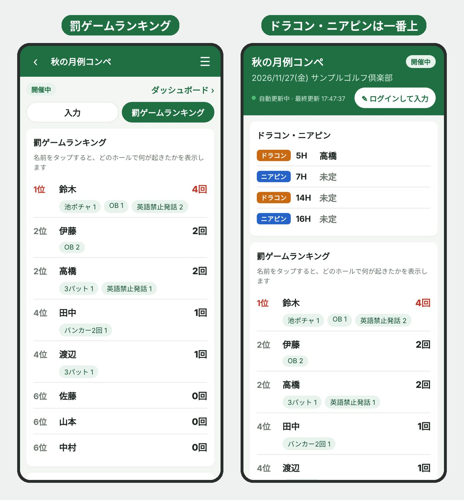
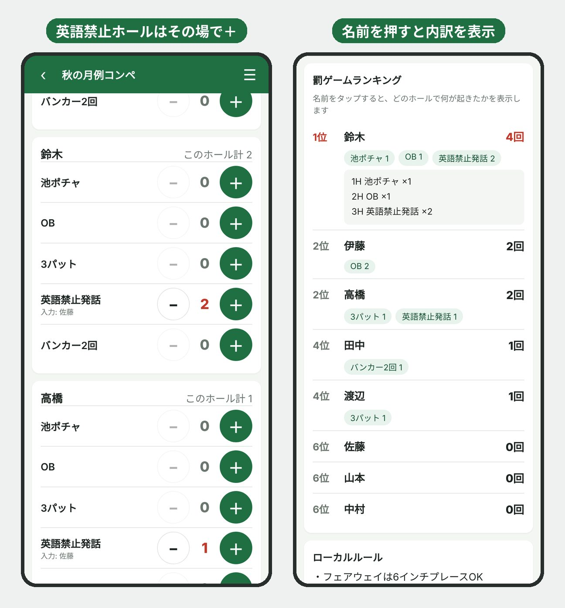
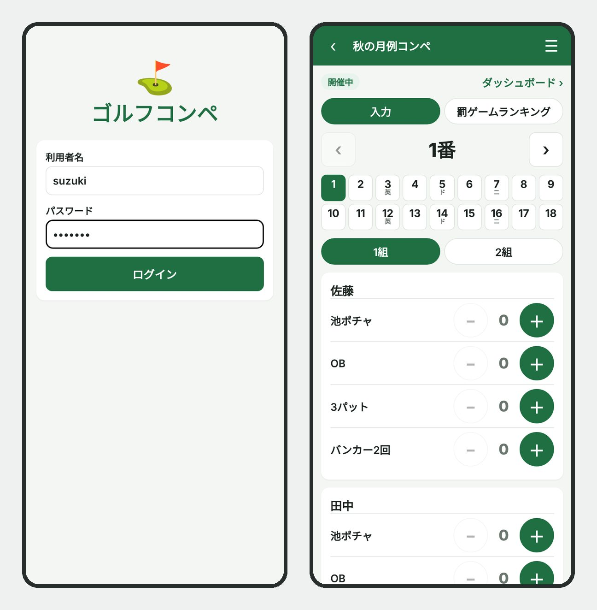
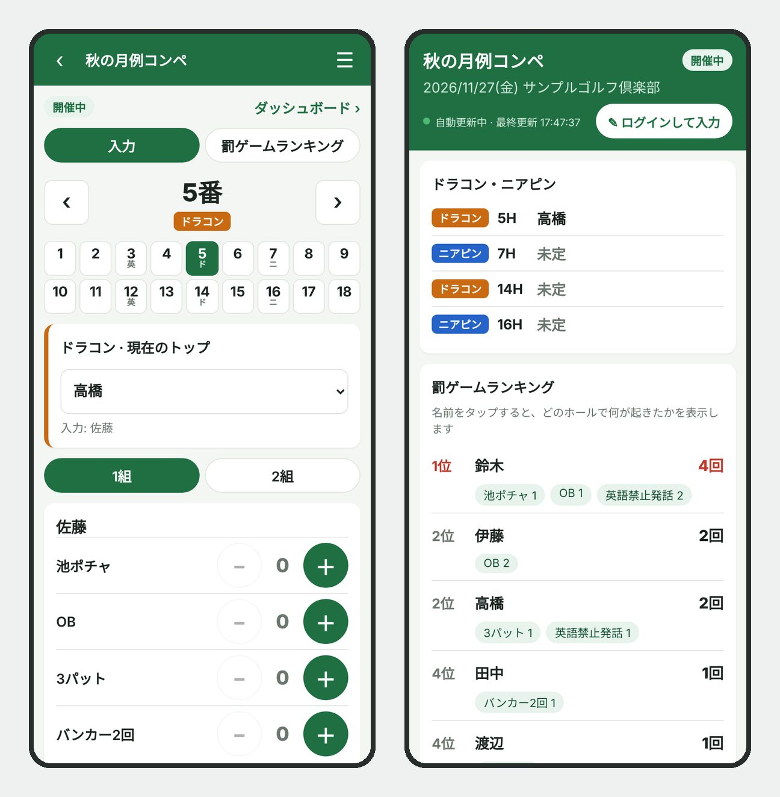

ゴルフコンペアプリ クイックガイド
コンペ中の罰ゲームと、ドラコン・ニアピンをスマホで記録するアプリです。できることと便利な使い方、使うための5つの手順をまとめました。
アプリ：https://postsyu.github.io/golf-compe/
このアプリでできること
- 罰ゲームを記録する：池ポチャ・OB・3パット・英語禁止ホールでの発話と、幹事が決めたオリジナルの罰を、ホールごとに「＋」ボタンで数えます。
- ドラコン・ニアピンを記録する：対象ホールで、今のトップが誰かを記録します。
- ランキングを見る：罰の合計回数のランキングを見られます。名前を押すと「何番ホールで何があったか」までわかります。
- ローカルルールを確かめる：幹事が登録したルールを、プレー中いつでも確認できます。
- 全員で同じ画面を見る：誰かが入力すると、数秒で全員の画面に反映されます。ダッシュボードはログインなしで見られます。
紙のメモや集計はいりません。スコアや順位の計算は、これまでどおり別に行います。

左：入力画面の罰ゲームランキング 右：ダッシュボード（一番上にドラコン・ニアピンの今のトップ、右上に入力画面へのボタン）
こう使うと便利
- 前日までにログインして、ホーム画面に追加しておく：当日はアイコンを押すだけで開けます。一度ログインすれば、30日間は入力し直し不要です。
- 入力係を組で1人決める：ホールを終えてカートに戻ったときに、まとめて入力すると楽です。2人で入力すると二重に数えてしまうので、注意してください。
- 英語禁止ホールでは、画面を開いたまま回る：発話のたびにその場で「＋」を押せば、数え漏れがありません。
- ドラコン・ニアピンは、組の記録がトップを超えたときだけ更新する：今のトップは画面でわかるので、後続の組への申し送りもいりません。
- 茶店や昼食でダッシュボードを見る：他の組の池ポチャやランキングの順位がわかり、話題になります。
- ルールに迷ったら画面を一番下までスクロールする：ローカルルールが表示されています。
- 表彰式はダッシュボードを見ながら発表する：名前を押して「3番で英語2回」のような内訳を紹介すると盛り上がります。

左：英語禁止ホールでは発話のたびに「＋」 右：名前を押すと「3H 英語禁止発話 ×2」のような内訳が出るので、表彰式のネタに使えます
使い方（5つの手順）
1. ログインする
幹事から届いた利用者名（半角英小文字）とパスワードを入れて「ログイン」を押します。ログインしたら、右上の「☰」→「パスワード変更」で、自分のパスワードに変えておきましょう。ホーム画面に追加しておくと、当日すぐに開けます。
2. ホールを選ぶ
「‹」「›」か1〜18の番号で、今のホールに合わせます。番号の下の「英」は英語禁止、「ド」はドラコン、「ニ」はニアピンのホールです。
3. 罰を記録する
罰を受けた人の欄で「＋」を押します。間違えたら「−」で直せます。入力する人は組で1人に決めましょう（2人で押すと2回と数えられます）。

左：ログイン 右：入力画面（ホールを選び、＋で記録）
4. ドラコン・ニアピンを更新する
対象ホールでは上に欄が出ます。今のトップの人を選びます。記録を超えたら、その人に変えます。
5. ダッシュボードで見る
幹事が共有したダッシュボードのURL（入力画面右上の「ダッシュボード ›」でも可）で、罰ゲームランキングとドラコン・ニアピンの今のトップが見られます。数秒ごとに自動で更新されます。名前を押すと、どのホールで何があったかがわかります。ローカルルールは画面の一番下にあります。右上の「ログインして入力」を押すと、入力画面に移れます。

左：ドラコンの現在のトップ 右：ダッシュボード
困ったら：「通信できませんでした」と出たら、電波の良い場所でもう一度押してください。ログインできないときは、幹事にパスワードのリセットを頼んでください。
アプリを開く